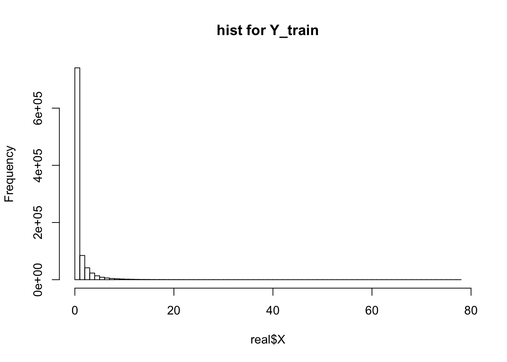
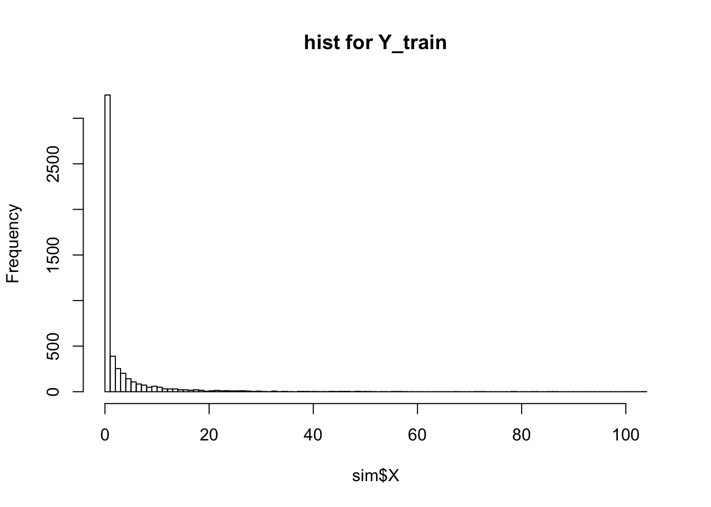
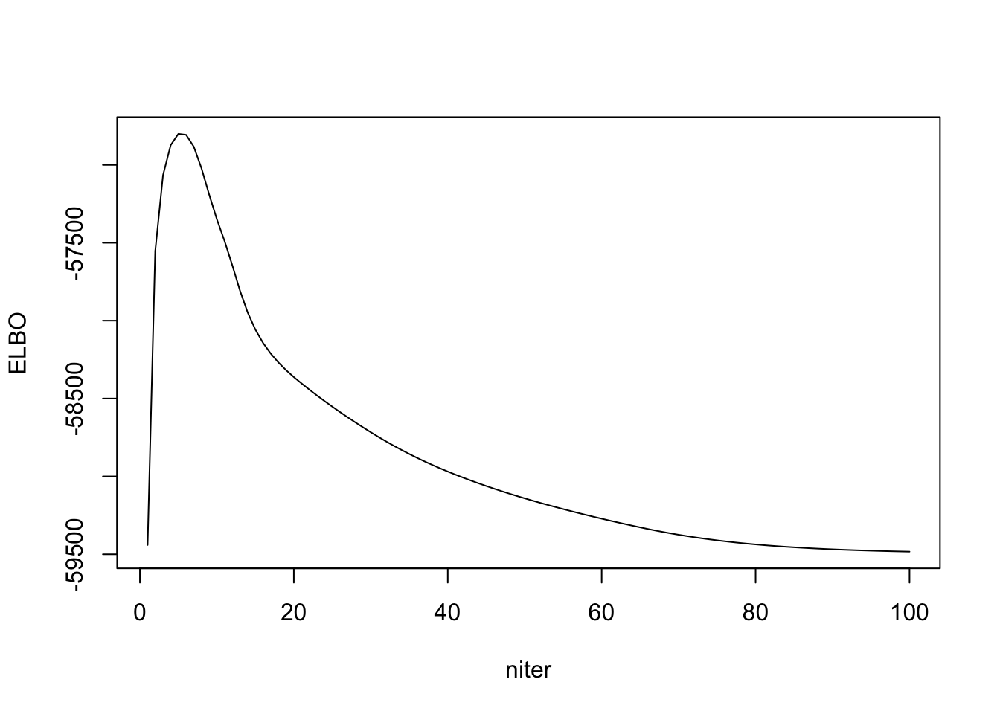
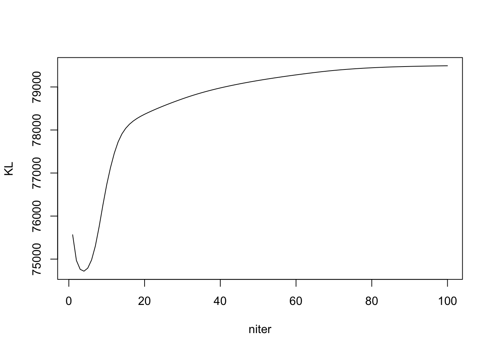
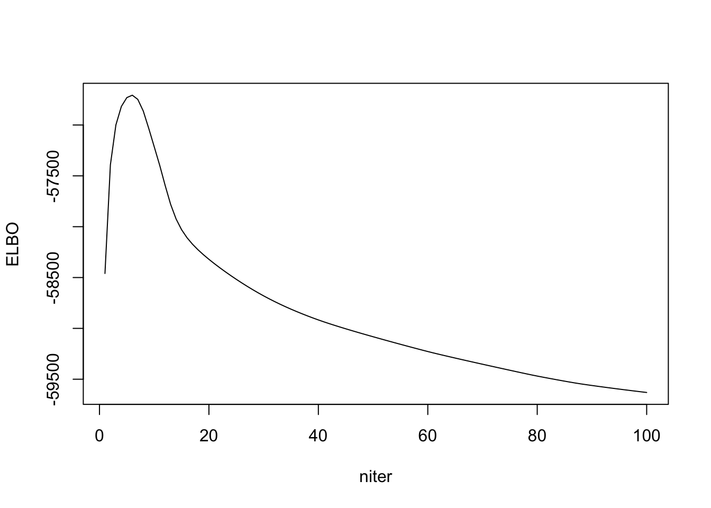
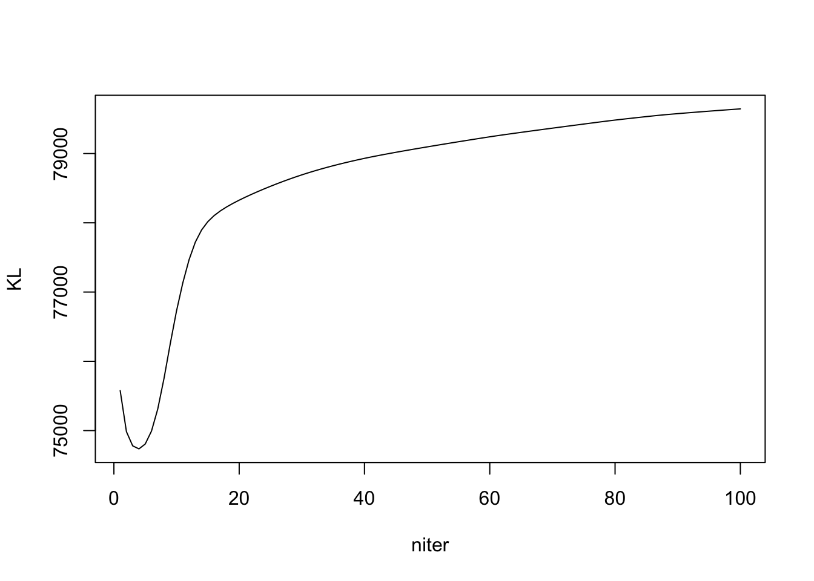
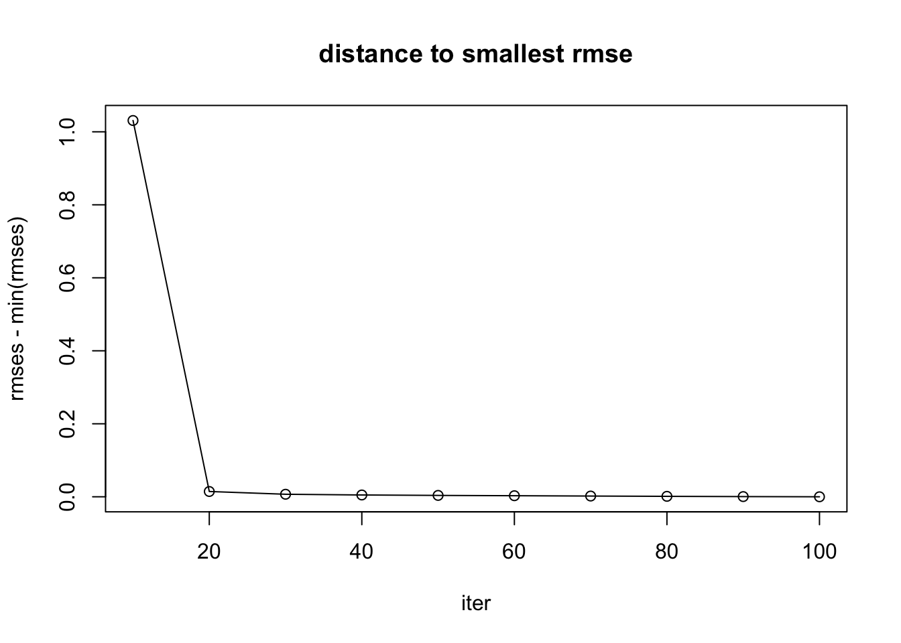

Last updated: 2019-10-12
Checks: 7 0
Knit directory: ebpmf_demo/
This reproducible R Markdown analysis was created with workflowr (version 1.4.0). The Checks tab describes the reproducibility checks that were applied when the results were created. The Past versions tab lists the development history.
Great! Since the R Markdown file has been committed to the Git repository, you know the exact version of the code that produced these results.
Great job! The global environment was empty. Objects defined in the global environment can affect the analysis in your R Markdown file in unknown ways. For reproduciblity it’s best to always run the code in an empty environment.
The command set.seed(20190923) was run prior to running the code in the R Markdown file. Setting a seed ensures that any results that rely on randomness, e.g. subsampling or permutations, are reproducible.
Great job! Recording the operating system, R version, and package versions is critical for reproducibility.
Nice! There were no cached chunks for this analysis, so you can be confident that you successfully produced the results during this run.
Great job! Using relative paths to the files within your workflowr project makes it easier to run your code on other machines.
Great! You are using Git for version control. Tracking code development and connecting the code version to the results is critical for reproducibility. The version displayed above was the version of the Git repository at the time these results were generated.
Note that you need to be careful to ensure that all relevant files for the analysis have been committed to Git prior to generating the results (you can use wflow_publish or wflow_git_commit). workflowr only checks the R Markdown file, but you know if there are other scripts or data files that it depends on. Below is the status of the Git repository when the results were generated:
Ignored files:
Ignored: .Rhistory
Ignored: .Rproj.user/
Untracked files:
Untracked: analysis/.ipynb_checkpoints/
Untracked: analysis/ebpmf_demo.Rmd
Untracked: analysis/ebpmf_rank1_demo2.Rmd
Untracked: analysis/softmax_experiments.ipynb
Untracked: data/trash/
Untracked: docs/figure/Experiment_ebpmf_rankk.Rmd/
Untracked: docs/figure/test.Rmd/
Unstaged changes:
Modified: analysis/ebpmf_rank1_demo.Rmd
Modified: analysis/ebpmf_rankk_demo.Rmd
Modified: analysis/softmax_experiments.Rmd
Note that any generated files, e.g. HTML, png, CSS, etc., are not included in this status report because it is ok for generated content to have uncommitted changes.
These are the previous versions of the R Markdown and HTML files. If you’ve configured a remote Git repository (see ?wflow_git_remote), click on the hyperlinks in the table below to view them.
| File | Version | Author | Date | Message |
|---|---|---|---|---|
| Rmd | d42555c | zihao12 | 2019-10-12 | Issue_ebpmf_issue2.Rmd |
| Rmd | 74fb51c | zihao12 | 2019-10-12 | issues |
library(ebpmf)
library(gtools)
library(NNLM)I encountered two issues in my experiments, and I reproduce them here:
* ELBO is not montonically increasing (and even decreasing). Either my ELBO formula is wrong, or my algorithm has a bug (it maximizes ELBO using coordinate descent, so should increase in each step). But the trend for RMSE (compare our posterior estimate for \(\Lambda\) with the true one) is decreasing (though there are small exceptions).
* In simulated dataset(simulate from a mixture of gamma), ebpmf methods get much better validation likelihood and RMSE. However, in real 10x genomics dataset, it is getting much worse result on validation set. (\(X\) is the real data. \(Y^{train}_{ij} \sim Bin(0.5, X_{ij})\) and \(Y^{val}_{ij} = X_{ij} - Y^{train}_{ij}\)).
10X genomics dataset
X = read.csv("data/10xgenomics/cd14_monocytes/filtered_matrices_mex/hg19/Y.csv")
Y = read.csv("data/10xgenomics/cd14_monocytes/filtered_matrices_mex/hg19/Yhat.csv")
real = list(X = as.matrix(X), Y = as.matrix(Y))
print(dim(real$X))[1] 2611 359hist(real$X, breaks = 100, main = "hist for Y_train")
simulated dataset
sim_mgamma <- function(dist){
pi = dist$pi
a = dist$a
b = dist$b
idx = which(rmultinom(1,1,pi) == 1)
return(rgamma(1, shape = a[idx], rate = b[idx]))
}
## simulate a poisson mean problem
## to do:
simulate_pm <- function(n, p, dl, df, K,scale_b = 10, seed = 123){
set.seed(seed)
## simulate L
a = replicate(dl,1)
b = 10*runif(dl)
pi <- rdirichlet(1,rep(1/dl, dl))
gl = list(pi = pi, a = a, b= b)
L = matrix(replicate(n*K, sim_mgamma(gl)), ncol = K)
## simulate F
a = replicate(df,1)
b = 10*runif(df)
pi <- rdirichlet(1,rep(1/df, df))
gf = list(pi = pi, a = a, b= b)
F = matrix(replicate(p*K, sim_mgamma(gf)), ncol = K)
## simulate X
lam = L %*% t(F)
X = matrix(rpois(n*p, lam), nrow = n)
Y = matrix(rpois(n*p, lam), nrow = n)
## prepare output
g = list(gl = gl, gf = gf)
out = list(X = X, Y = Y, L = L, F = F, g = g)
return(out)
}
n = 50
p = 100
K = 2
dl = 10
df = 10
scale_b = 5
sim = simulate_pm(n, p, dl, df, K, scale_b = scale_b, seed =12)
print(dim(sim$X))[1] 50 100hist(sim$X, breaks = 100, main = "hist for Y_train")
I cannot get a strictly increasing ELBO. Either the ELBO is wrong, or my algorithm is wrong. Then I check to see if RMSE with true \(\Lambda\) is decreasing, and it seems to.
Note the KL is \(KL(q_L || g_L) + KL(q_F || g_F)\). Detail in write up.
ebpmf_exponential_mixturem = 2
out_ebpmf_exp = ebpmf::ebpmf_exponential_mixture(sim$X, K, m = m, maxiter.out = 100)
plot(out_ebpmf_exp$ELBO, type = "l", xlab = "niter", ylab = "ELBO")
plot(out_ebpmf_exp$KL, type = "l", xlab = "niter", ylab = "KL")
## experiment to see RMSE on Lambda
Lam_true = sim$L %*% t(sim$F)
try_experiment_rmse <- function(iter, Lam_true){
test = ebpmf::ebpmf_exponential_mixture(sim$X, K, m = m, maxiter.out = iter)
Lam = test$qg$qls_mean %*% t(test$qg$qfs_mean)
return(sqrt(mean((Lam - Lam_true)^2)))
}
iters = seq(10,100,10)
rmses <- c()
for(iter in iters){
rmse = try_experiment_rmse(iter, Lam_true)
rmses = c(rmses, rmse)
}
rmses [1] 1.6556401 0.6290973 0.6228208 0.6200187 0.6181718 0.6169139 0.6169600
[8] 0.6168247 0.6166842 0.6166540plot(iters, rmses - min(rmses), main = "distance to smallest rmse", xlab = "iter", type = "l")
points(iters, rmses - min(rmses))ebpmf_exponential_mixtureout_ebpmf_exp = ebpmf::ebpmf_point_gamma(sim$X, K, maxiter.out = 100)
plot(out_ebpmf_exp$ELBO, type = "l", xlab = "niter", ylab = "ELBO")
plot(out_ebpmf_exp$KL, type = "l", xlab = "niter", ylab = "KL")
## experiment to see RMSE on Lambda
Lam_true = sim$L %*% t(sim$F)
try_experiment_rmse <- function(iter, Lam_true){
test = ebpmf::ebpmf_point_gamma(sim$X, K, maxiter.out = iter)
Lam = test$qg$qls_mean %*% t(test$qg$qfs_mean)
return(sqrt(mean((Lam - Lam_true)^2)))
}
iters = seq(10,100,10)
rmses <- c()
for(iter in iters){
rmse = try_experiment_rmse(iter, Lam_true)
rmses = c(rmses, rmse)
}
rmses [1] 1.6422731 0.6258121 0.6182538 0.6162556 0.6150823 0.6142201 0.6133480
[8] 0.6125504 0.6118396 0.6113208plot(iters, rmses - min(rmses), main = "distance to smallest rmse", xlab = "iter", type = "l")
points(iters, rmses - min(rmses))
ebpmf and nnmf(The execution of the same code below is done in an interactive session in midway, and the result is shown below)
methods = c(); runtimes = c(); ll_trains = c(); ll_vals = c(); RMSEs = c()
## ebpmf_exponential_mixture
start = proc.time()
out = ebpmf::ebpmf_exponential_mixture(sim$X, K, m = 2, maxiter.out = 100)
runtime = proc.time() - start
lam_fit = out$qg$qls_mean %*% t(out$qg$qfs_mean)
ll_train = sum(dpois(sim$X, lambda = lam_fit, log = T))
ll_val = sum(dpois(sim$Y, lambda = lam_fit, log = T))
RMSE = mean((lam_fit - (sim$L %*% t(sim$F)))^2)
methods = c(methods, "ebpmf_exponential_mixture")
runtimes = c(runtimes, runtime[[3]])
ll_trains = c(ll_trains, ll_train)
ll_vals = c(ll_vals, ll_val)
RMSEs = c(RMSEs, RMSE)
## nnmf
W0 = out$qg$qls_mean
H0 = t(out$qg$qfs_mean)
start = proc.time()
out = NNLM::nnmf(sim$X, K,init = list(W0 = W0, H0 = H0), loss = "mkl", method = "lee", max.iter = 100, rel.tol = -1)
runtime = proc.time() - start
lam_fit = out$W %*% out$H
ll_train = sum(dpois(sim$X, lambda = lam_fit, log = T))
ll_val = sum(dpois(sim$Y, lambda = lam_fit, log = T))
RMSE = mean((lam_fit - (sim$L %*% t(sim$F)))^2)
methods = c(methods, "NNMF")
runtimes = c(runtimes, runtime[[3]])
ll_trains = c(ll_trains, ll_train)
ll_vals = c(ll_vals, ll_val)
RMSEs = c(RMSEs, RMSE)
## ebpmf_point_gamma
start = proc.time()
out = ebpmf::ebpmf_point_gamma(sim$X, K,maxiter.out = 100)
runtime = proc.time() - start
lam_fit = out$qg$qls_mean %*% t(out$qg$qfs_mean)
ll_train = sum(dpois(sim$X, lambda = lam_fit, log = T))
ll_val = sum(dpois(sim$Y, lambda = lam_fit, log = T))
RMSE = mean((lam_fit - (sim$L %*% t(sim$F)))^2)
methods = c(methods, "ebpmf_point_gamma")
runtimes = c(runtimes, runtime[[3]])
ll_trains = c(ll_trains, ll_train)
ll_vals = c(ll_vals, ll_val)
RMSEs = c(RMSEs, RMSE)
df <- data.frame(method = methods, runtime = runtimes, ll_train = ll_trains, ll_val = ll_vals, RMSE = RMSEs)df = readRDS("output/Issue_ebpmf_issue2_df1.Rds")
df method runtime ll_train ll_val RMSE
1 ebpmf_exponential_mixture 6.014 -5812.834 -6011.257 0.3804012
2 NNMF 0.135 -5652.354 -6150.184 0.6761194
3 ebpmf_point_gamma 8.778 -5810.426 -6023.255 0.3743813K = 2
maxiter.out = 100(The execution of the same code below is done in an interactive session in midway, and the result is shown below)
methods = c(); runtimes = c(); ll_trains = c(); ll_vals = c();
## ebpmf_exponential_mixture
start = proc.time()
out = ebpmf::ebpmf_exponential_mixture(real$X, K, m = 2, maxiter.out = maxiter.out)
runtime = proc.time() - start
lam_fit = out$qg$qls_mean %*% t(out$qg$qfs_mean)
ll_train = sum(dpois(real$X, lambda = lam_fit, log = T))
ll_val = sum(dpois(real$Y, lambda = lam_fit, log = T))
methods = c(methods, "ebpmf_exponential_mixture")
runtimes = c(runtimes, runtime[[3]])
ll_trains = c(ll_trains, ll_train)
ll_vals = c(ll_vals, ll_val)
## nnmf
W0 = out$qg$qls_mean
H0 = t(out$qg$qfs_mean)
start = proc.time()
out = NNLM::nnmf(real$X, K,init = list(W0 = W0, H0 = H0), loss = "mkl", method = "lee", max.iter = maxiter.out, rel.tol = -1)
runtime = proc.time() - start
lam_fit = out$W %*% out$H
ll_train = sum(dpois(real$X, lambda = lam_fit, log = T))
ll_val = sum(dpois(real$Y, lambda = lam_fit, log = T))
methods = c(methods, "NNMF")
runtimes = c(runtimes, runtime[[3]])
ll_trains = c(ll_trains, ll_train)
ll_vals = c(ll_vals, ll_val)
## ebpmf_point_gamma
start = proc.time()
out = ebpmf::ebpmf_point_gamma(real$X, K,maxiter.out = maxiter.out)
runtime = proc.time() - start
lam_fit = out$qg$qls_mean %*% t(out$qg$qfs_mean)
ll_train = sum(dpois(real$X, lambda = lam_fit, log = T))
ll_val = sum(dpois(real$Y, lambda = lam_fit, log = T))
methods = c(methods, "ebpmf_point_gamma")
runtimes = c(runtimes, runtime[[3]])
ll_trains = c(ll_trains, ll_train)
ll_vals = c(ll_vals, ll_val)
df <- data.frame(method = methods, runtime = runtimes, ll_train = ll_trains, ll_val = ll_vals)df = readRDS("output/Issue_ebpmf_issue2_df2.Rds")
df method runtime ll_train ll_val
1 ebpmf_exponential_mixture 179.030 -976886.5 -984033.4
2 NNMF 15.181 -962786.6 -974926.8
3 ebpmf_point_gamma 208.358 -977285.2 -984566.8Our ebpmf methods do better in simulation data in validation, but much worse in real 10x-genomics dataset.
sessionInfo()R version 3.5.1 (2018-07-02)
Platform: x86_64-apple-darwin15.6.0 (64-bit)
Running under: macOS 10.14
Matrix products: default
BLAS: /Library/Frameworks/R.framework/Versions/3.5/Resources/lib/libRblas.0.dylib
LAPACK: /Library/Frameworks/R.framework/Versions/3.5/Resources/lib/libRlapack.dylib
locale:
[1] en_US.UTF-8/en_US.UTF-8/en_US.UTF-8/C/en_US.UTF-8/en_US.UTF-8
attached base packages:
[1] stats graphics grDevices utils datasets methods base
other attached packages:
[1] NNLM_0.4.2 gtools_3.8.1 ebpmf_0.1.0
loaded via a namespace (and not attached):
[1] workflowr_1.4.0 Rcpp_1.0.2 digest_0.6.21 rprojroot_1.3-2
[5] backports_1.1.5 git2r_0.25.2 magrittr_1.5 evaluate_0.14
[9] ebpm_0.0.0.9000 stringi_1.4.3 fs_1.3.1 whisker_0.3-2
[13] rmarkdown_1.13 tools_3.5.1 stringr_1.4.0 glue_1.3.1
[17] mixsqp_0.1-121 xfun_0.8 yaml_2.2.0 compiler_3.5.1
[21] htmltools_0.3.6 knitr_1.25